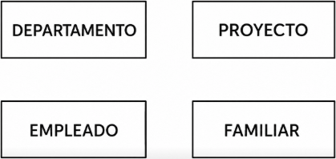
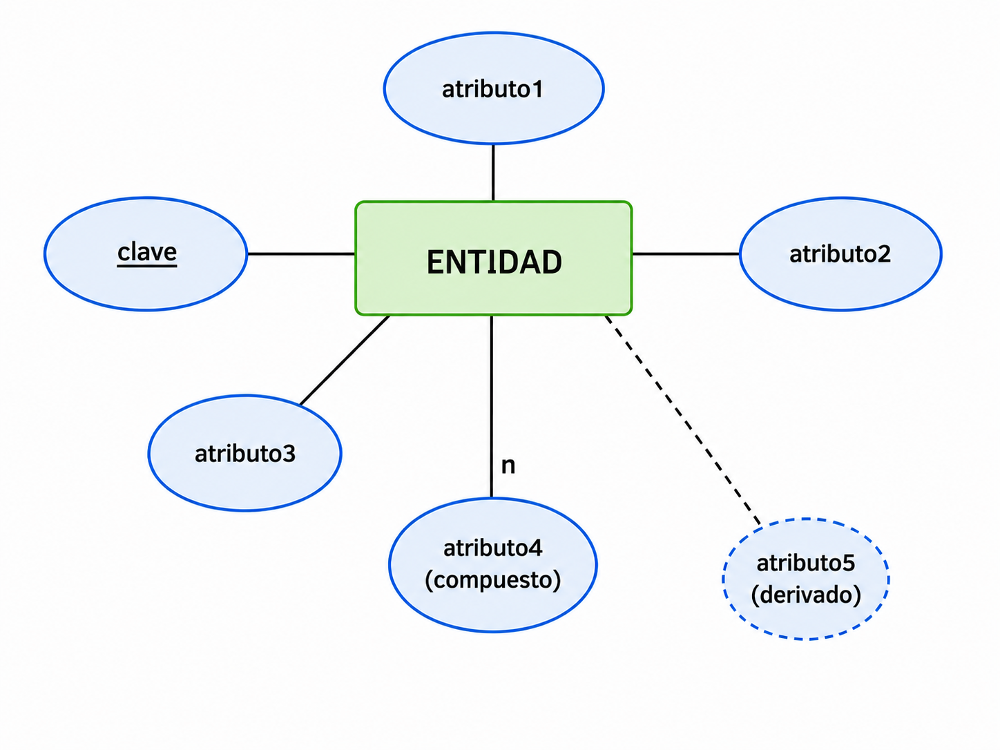
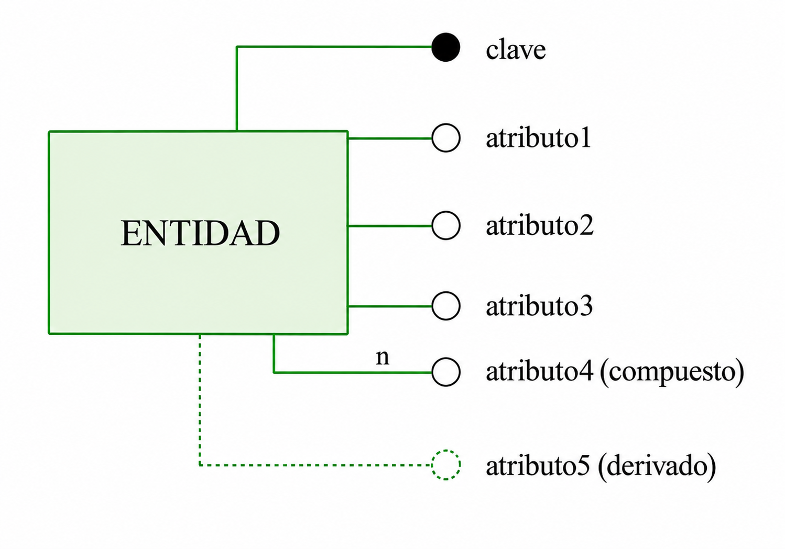
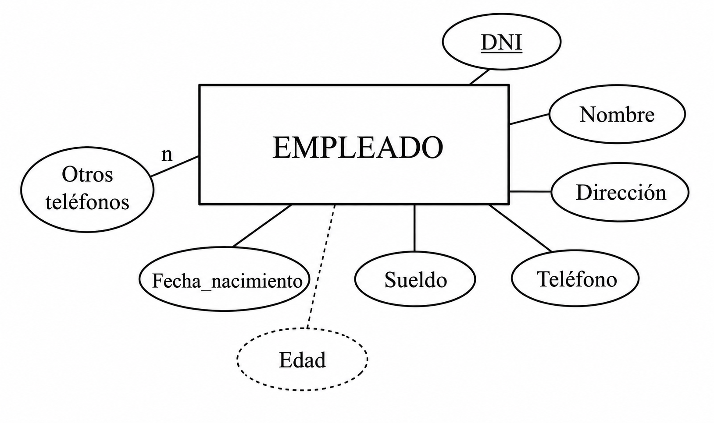
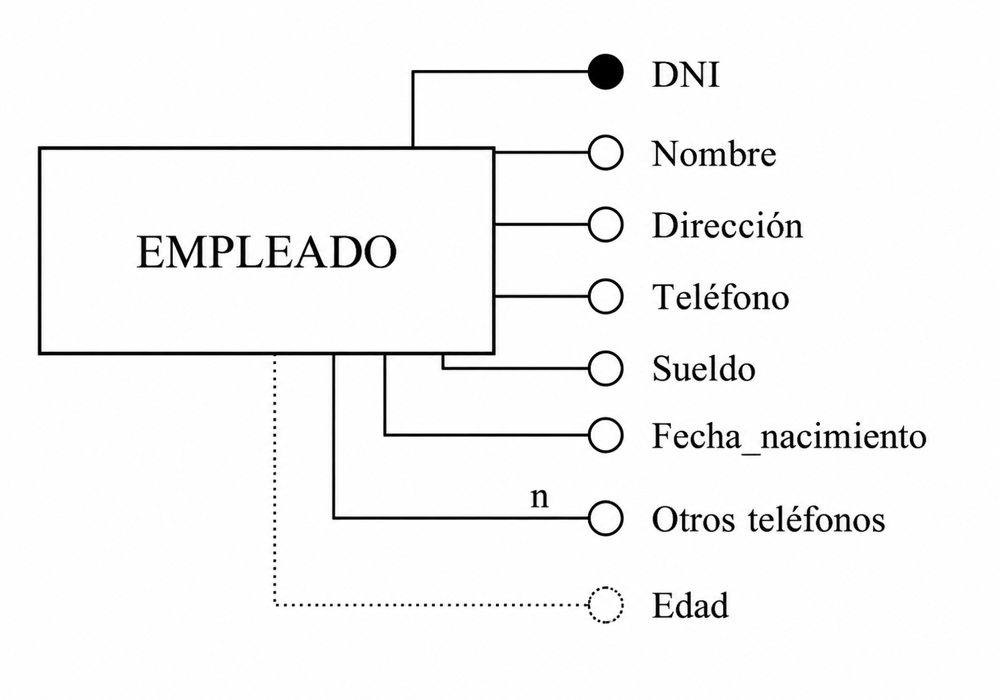
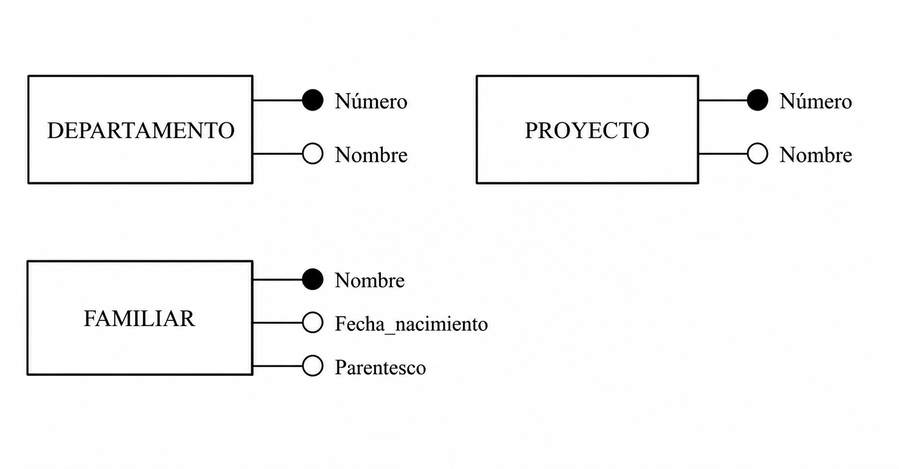

3. Entidades y Atributos
A partir del análisis de requerimientos, intentaremos averiguar cuáles son las entidades y atributos del sistema.
Ejemplo: Empresa
- La compañía está organizada en departamentos.
-
Cada uno tiene nombre único, número único y un empleado que lo dirige. Nos interesa la fecha en la que comenzó a dirigirlo.
-
Cada departamento controla una serie de proyectos. Cada uno de estos proyectos tiene nombre y número únicos, y estará coordinado por un único departamento.
-
De cada empleado nos interesa el nombre (formado por dos apellidos y nombre de pila), DNI, dirección, teléfono, sueldo y fecha de nacimiento. Todo empleado está asignado a un departamento, y muchas veces tendrá un supervisor. Puede trabajar en más de un proyecto (no necesariamente controlados por el mismo departamento) y trabajará un determinado número de horas a la semana en cada proyecto. En un proyecto siempre trabajará, como mínimo, un empleado.
-
Queremos saber también los familiares de cada empleado, para administrar los términos de un seguro. Queremos saber el nombre, fecha de nacimiento y parentesco con el empleado.
3.1 Entidades
La ENTIDAD será una persona, cosa, lugar, concepto o suceso, con existencia real o abstracta, que nos interesa.
En nuestro ejemplo, detectamos que los empleados son entidades. Como todos los empleados tendrán para nosotros las mismas características: (nombre, dirección, teléfono, sueldo...) los podemos englobar dentro de la misma estructura: EMPLEADO.
Tipo de Entidad y Ocurrencia
Definiremos:
| Concepto | Significado |
|---|---|
| TIPO DE ENTIDAD | La estructura genérica (por ejemplo EMPLEADO) |
| OCURRENCIA DE ENTIDAD | Cada realización concreta (cada empleado, por ejemplo Juan Pérez) |
Importante
En el diseño de bases de datos nos interesan los tipos de entidad, no las ocurrencias concretas.
Las entidades se representan mediante:
- un rectángulo
- con el nombre de la entidad en su interior
- preferiblemente en singular

3.2 Atributos
Un ATRIBUTO es cada una de las características de una entidad que nos interesan.
Ejemplo
Nombre completo, DNI, dirección.
Teléfono, sueldo, fecha de nacimiento.
Asignados a un departamento con supervisor.
Trabaja en varios proyectos.
Trabaja unas horas semanales por proyecto.
En la entidad EMPLEADO tendremos atributos como:
- Nombre
- DNI
- Dirección
- Teléfono
- Sueldo
- Fecha de nacimiento
Atributos que no interesan
No consideraremos atributos aquellas características que no sean relevantes para el sistema. Por ejemplo: estatura, talla de pantalones, color favorito...etc
Valores de los atributos
Cada ocurrencia de entidad tendrá un valor para cada atributo.
| Nombre | DNI | Dirección | Teléfono | Sueldo | Fecha de nacimiento |
|---|---|---|---|---|---|
| Juan Pérez | 18.901.234 | c/ Colón 23, Castellón 12503 | 964.22.33.44 | 1.200 € | 22-3-1970 |
Valores nulos
A veces un atributo puede tomar el valor NULO.
Por ejemplo:
- un empleado sin teléfono
| Nombre | DNI | Dirección | Teléfono | Sueldo | Fecha de nacimiento |
|---|---|---|---|---|---|
| Juan Pérez | 18.901.234 | c/ Colón 23 | 1.200 € | 22-3-1970 |
Tipos de atributos
Atributos simples
Contienen una única información, como el sueldo, el dni o la fecha de nacimiento.
Atributos compuestos
Están formados por varias partes.
Ejemplo
Nombre = (nombre de pila, primer apellido, segundo apellido)
Dirección= (calle, ciudad, codigo postal)
Atributos multivaluados
Pueden contener más de un valor.
Ejemplo
Otros teléfonos = (móvil, segunda residencia)
| Nombre | DNI | Dirección | Teléfono | Sueldo | Fecha de nacimiento | Otros teléfonos |
|---|---|---|---|---|---|---|
| Juan Pérez | 18.901.234 | c/ Colón 23, Castellón 12503 | 964.22.33.44 | 1.200 € | 22-3-1970 | 607.312.456, 964.11.22.44 |
Observación
En general evitaremos los atributos compuestos y multivaluados, aunque el modelo los permite.
Atributos derivados
Son atributos que pueden calcularse a partir de otros.
Ejemplo
Edad = fecha actual - fecha de nacimiento
| Nombre | DNI | Dirección | Teléfono | Sueldo | Fecha de nacimiento | Otros teléfonos | Edad |
|---|---|---|---|---|---|---|---|
| Juan Pérez | 18.901.234 | c/ Colón 23, Castellón 12503 | 964.22.33.44 | 1.200 € | 22-3-1970 | 607.312.456, 964.11.22.44 | 56 |
Claves
El modelo E/R necesita poder identificar cada ocurrencia de forma única.
Por ello existirán atributos capaces de identificar unívocamente cada entidad.
Condiciones que debe tener una clave
Una clave:
- no puede repetirse
- no puede tomar valores nulos
Ejemplo
| Atributo | ¿Sirve como clave? | Motivo |
|---|---|---|
| DNI | ✅ | Identifica unívocamente |
| Nombre | ✅ | Podría identificar |
| Sueldo | ❌ | Puede repetirse |
| Teléfono | ❌ | Puede ser nulo |
Clave candidata y clave principal
Los atributos (o conjuntos de atributos) que cumplen la condición anterior se denominan claves candidatas. Como una tabla puede tener varias claves candidatas, se elige una de ellas para identificar de forma única cada registro. Esta clave recibe el nombre de clave principal.
| Concepto | Significado |
|---|---|
| Clave candidata | Atributo que puede identificar una entidad |
| Clave principal | Clave candidata elegida como identificador principal |
Restricción del Modelo E/R
Todas las entidades deben tener una clave principal.
Representación de atributos
Los atributos se representan de 2 maneara posibles:
- Un óvalo unido a una entidad.
- El nombre del atributo se escribe en su interior o junto a el.
| Representación 1 | Representación 2 |
|---|---|
 |
 |
| Representación 1 | Representación 2 |
|---|---|
 |
 |
Representaciones especiales
| Tipo | Representación |
|---|---|
| Clave principal | Subrayada o círculo negro |
| Multivaluado | Línea con n |
| Derivado | Línea discontinua |
Aplicación al ejemplo
En nuestro ejemplo, el resto de las entidades quedarían con los siguientes atributos:
